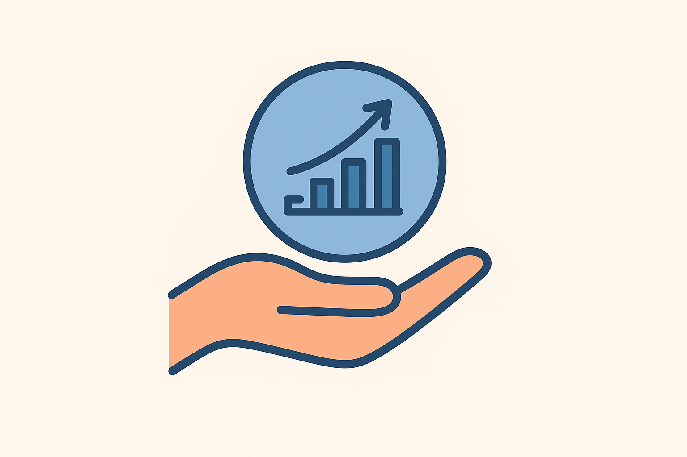

الدرس الأول: جغرافيا التنمية ومجالاتها

أهداف الدرس
في نهاية الدرس، ينبغي أن يكون الطالب قادراً على أن:
- يعرف مفهوم التنمية
- يعدد مجالات التنمية.
- يحدد مراحل تطور مفهوم التنمية.
- يحدد معوقات ديموغرافية للتنمية.
- يستنتج العلاقة بين كل من الجغرافيا والتخطيط والتنمية.
- يستخدم شبكة المعلومات الدولية (الإنترنت) في الحصول على معلومات جغرافية عن التنمية.
أولاً: مفهوم التنمية
عملية شاملة تهدف إلى استغلال الموارد الاقتصادية استغلالًا أمثل يحقق توزيعًا عادلًا للدخل بين فئات المجتمع المختلفة.
تطور مفهوم التنمية
- التنمية الأقتصادية
- التنمية الأجتماعية
- التنمية البشرية
تعريف التنمية الاقتصادية
هي عملية تهدف إلى زيادة الدخل القومي من خلال استغلال الموارد الطبيعية والبشرية المتاحة.
بيّن العلاقة بين التنمية الاقتصادية والتوزيع العادل للدخل.
تؤدي التنمية الاقتصادية إلى زيادة الدخل القومي بما ينعكس إيجابيًا على رفع مستوى معيشة الأفراد.
التنمية الاجتماعية:
هي عملية شاملة تتناول الجوانب الاجتماعية في المجتمع،بما يشمل تحسين مستوى التعليم والرعاية الصحية والبيئية وتحقيق العدالة الاجتماعية.

ثانياً: مبادئ التنمية
- الشمولية
- التكامل
- الاستدامة
أي يجب أن تشمل كل جوانب الحياة سواء السياسية والاقتصادية والاجتماعية والثقافية كما تشارك فيها جميع المؤسسات الحكومية والخاصة بالدولة
حيث توجد علاقات متبادلة وتكاملية بين جميع القطاعات المختلفة، ويتأثر كل قطاع بالآخر ويؤثر فيه.
فاهتمام قطاع الصحة والتنمية يؤثر في النمو الاقتصادي الذي يجب أن تنتهجه التنمية بجميع القطاعات
المختلفة داخل الدولة حتى لا يحدث نمو لقطاع على حساب باقي القطاعات الأخرى.
يقصد بها تنمية الموارد بحيث تلبّي احتياجات الأجيال الحالية دون ظهور للموارد بما يؤثر على حقوق الأجيال القادمة. وترتبط بمعالجة التوازن بين الجوانب الاقتصادية والاجتماعية والبيئية في الحاضر والمستقبل.
ثالثا:أبعاد التنمية:
- البعدالاقتصادي:
- البعد الاجتماعي:
- البعد البيئي:
يرتبط بمستوى الدخل القومي ونصيب الفرد منه.
يرتبط بمستوى الخدمات الاجتماعية التي يحصل عليها الفرد مثل الخدمات الصحية والخدمات التعليمية والثقافية وتحقيق العدالة الاجتماعية.
يتمثل في حماية الموارد الطبيعية وترشيد استخدامها والمحافظة على عناصر البيئة المختلفةوإعادة استخدامها بصورة رشيدة.
رابعا: متطلبات التنمية
لتحقيق التنمية لا بد من توفير الاحتياجات الأساسية التي تساعد على تحقيق التنمية الاجتماعية والمحافظة على حقوق الأفراد في الحياة الكريمة،
ويرتبط ضمان هذه الاحتياجات بعدة جوانب ، ومن أمثلتها ما يلي :
- متطلبات صحية
- متطلبات اجتماعية
- متطلبات اقتصادية
- متطلبات سياسية
تعبر عن : الرعاية الصحية – الخدمات العلاجية – القضاء على الأمراض.
تعبر عن : رفع مستوى التعليم – الصحة – تطوير المجتمع – الأمن.
تعبر عن : زيادة الإنتاج – تحسين البنية التحتية – رفع مستوى المعيشة.
تعبر عن : تحقيق الاستقرار – احترام الحقوق – مشاركة المواطنين في اتخاذ القرار.
خامسًا :مفهوم التنمية المستدامة
هو مفهوم حديث يهتم باستخدام الموارد الطبيعية بشكل لا يؤدي إلى استنزافها للأجيال القادمة، ويوازن بين احتياجات الحاضر وحقوق المستقبل في البيئة.

العلاقة بين التكنولوجياوالتنمية؟
تسهم التكنولوجيا في إحداث التنمية، من خلال :
- رفع كفاءة الإنتاج في المجالات الاقتصادية.
- تطوير الخدمات الصحية والتعليمية باستخدام التقنيات الحديثة.
- حماية البيئة من خلال أجهزة قياس التلوث ومعالجته.
- توفير المعلومات الدقيقة التي تساعد متخذي القرار على التخطيط السليم.
التقويم
ما المقصود بكل مما يأتي :
- التنمية
- التكنولوجيا
- متطلبات التنمية